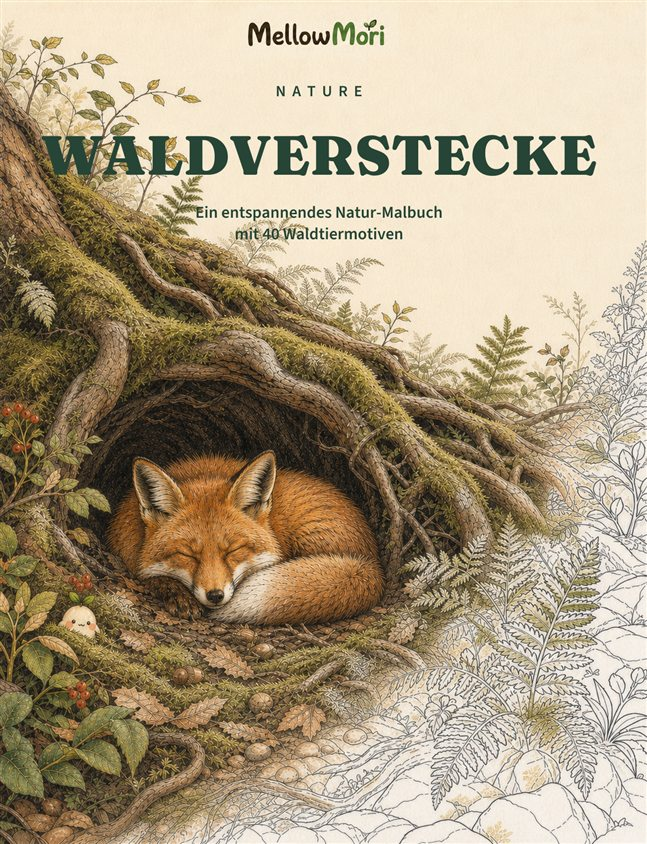
Deutsche Ausgabe
Erhältlich
Waldverstecke
Verborgene Waldbewohner, natürliche Rückzugsorte und detailreiche Pflanzenwelten.
Bei Amazon.de ansehen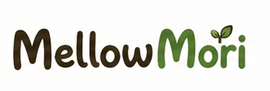
Die erste MellowMori-Kollektion
Entdecke Wald, Meer und Wüste in drei sorgfältig gestalteten Natur-Malbüchern. Alle drei Ausgaben sind jetzt erhältlich.
Nature-Kollektion ansehen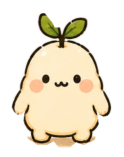
MellowMori Nature
Drei Bände führen durch Wald, Meer und Wüste – jeder mit 40 detailreichen Motiven rund um Tiere und ihre Lebensräume. Waldverstecke, Geheimnisse des Meeres und Wüsten voller Leben sind erhältlich.

Deutsche Ausgabe
Erhältlich
Verborgene Waldbewohner, natürliche Rückzugsorte und detailreiche Pflanzenwelten.
Bei Amazon.de ansehen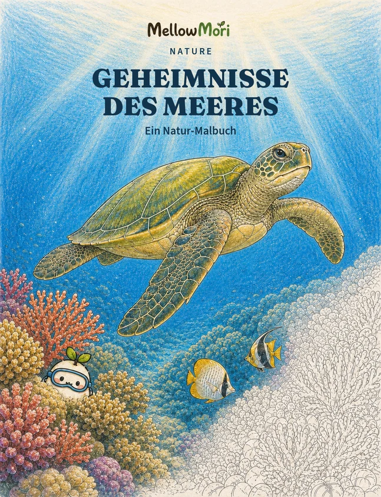
Deutsche Ausgabe
Erhältlich
Meerestiere, Korallen und ruhige Unterwasserwelten zum genauen Entdecken.
Bei Amazon.de ansehen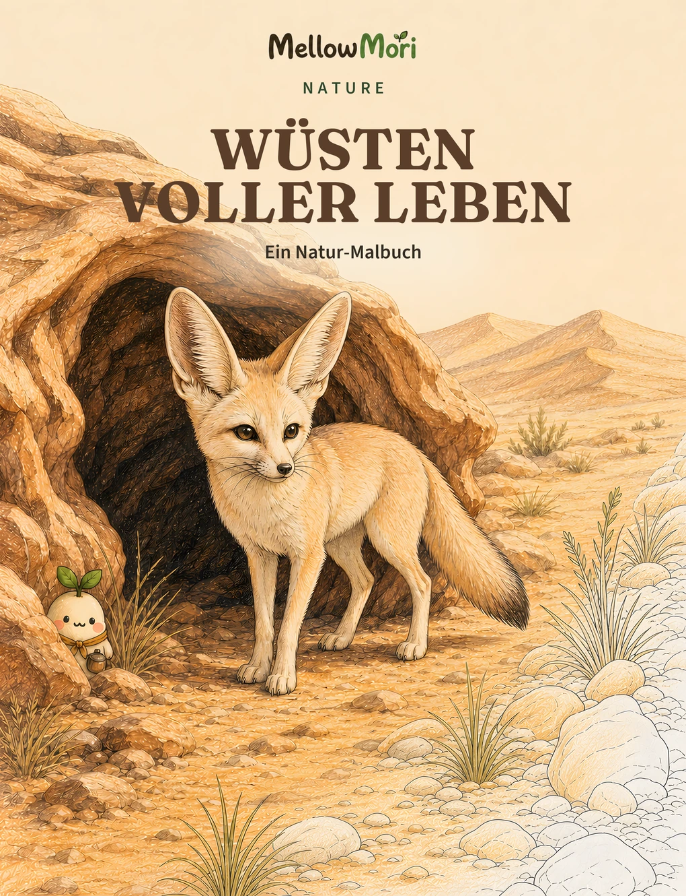
Deutsche Ausgabe
Erhältlich
Wüstentiere, Felslandschaften und überraschend lebendige Lebensräume.
Bei Amazon.de ansehenFarbinspiration aus allen drei Bänden
Neun ausgewählte Beispiele zeigen, wie unterschiedlich Wald, Meer und Wüste wirken können. Die Motive wurden von MellowMori koloriert und dienen als Inspiration – sie sind keine Kundenarbeiten.
Wald
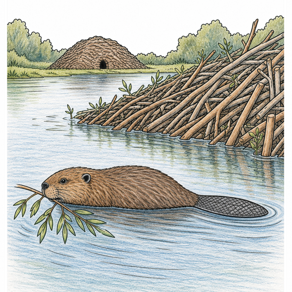
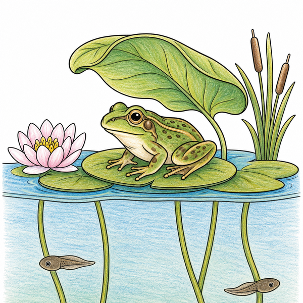
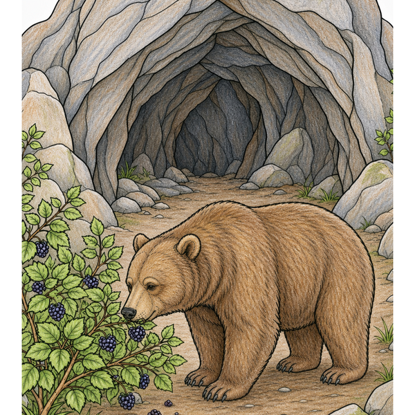
Meer
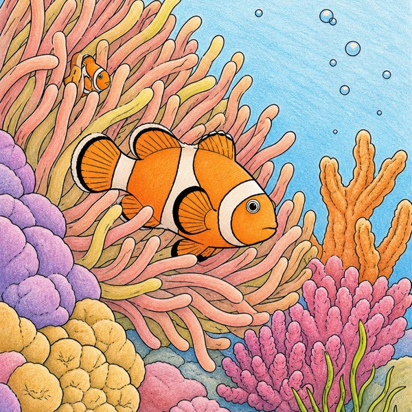
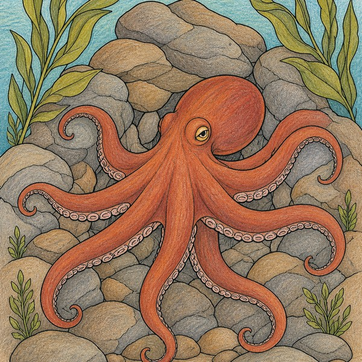
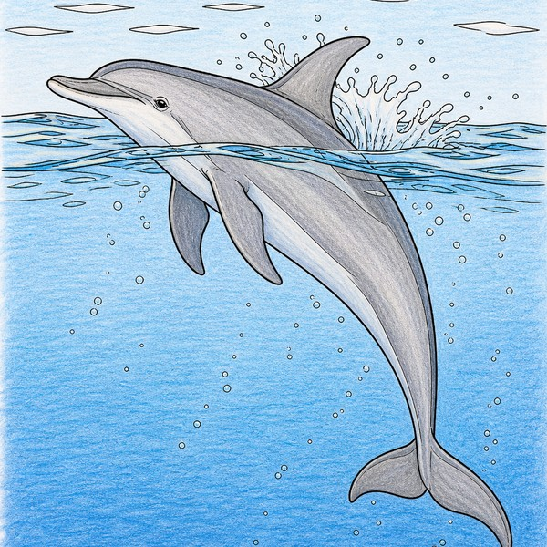
Wüste
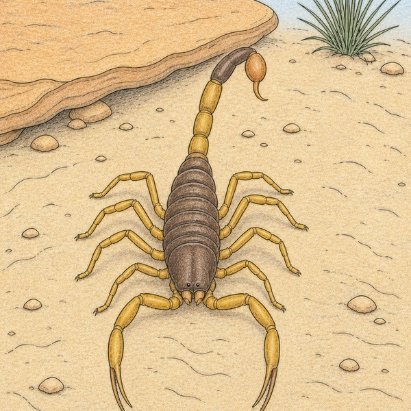
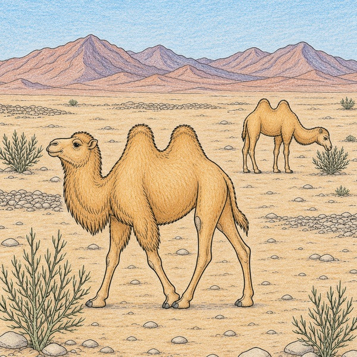
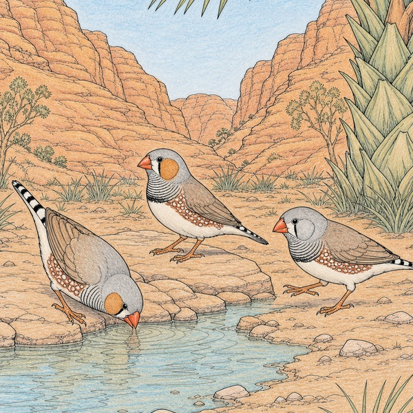
Unsere Produktlinien
Nature
Tiere und ihre Lebensräume stehen im Mittelpunkt ruhiger, detailreicher Ausmalwelten.
Nature entdeckenLittle Worlds
Verspielte Malwelten mit wiederkehrenden Freunden, kleinen Abenteuern und klaren, angenehm ausmalbaren Szenen.
DemnächstMori ist ein kleiner Waldgeist, der ruhige Orte, die Natur und kleine Entdeckungsmomente liebt. Als Markenfigur von MellowMori begrüßt Mori gelegentlich neugierige Entdecker außerhalb der Malwelten.